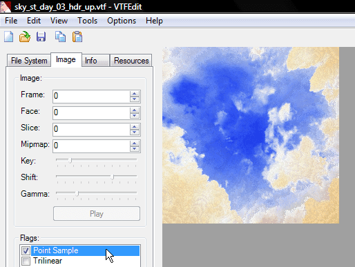

Ok, this may sound like nitpicking, but it’s so easy to fix that I decided to report it.
Under close inspection, the HDR skyboxes look very pixelated, thanks to a bug within the Source Engine.

Fixing:

Just check the “Point Sample” flag and save the file. It seems that the engine belives it’s “true” when it’s “false” and vice-versa.
Fixed sky:

Also feel free to check my article. There are some tips on how to properly compile HDR skyboxes there.
And congratulations for the awesome mod! I can’t wait to play Xen.